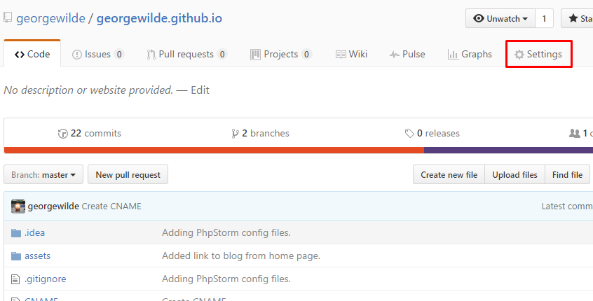
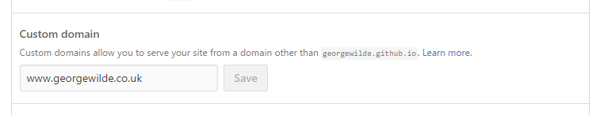
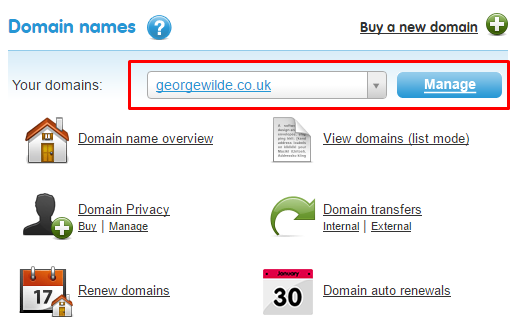
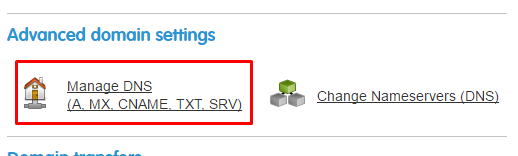
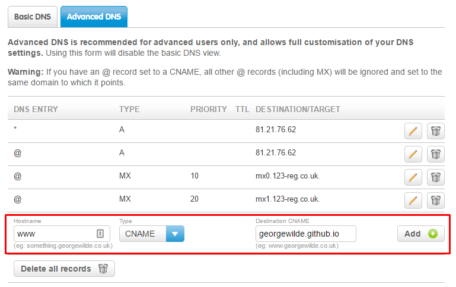

So you’ve set up a Github Pages repository, added some great content; a page to tell the world who you are, what your product or project is about or started writing your first blog post and now you want to make it a bit more personal by using your own domain name.
Setting up a custom domain for Github Pages is a simple process. Just follow these steps:
Tell Github you want to use a custom domain.
- Log in to your Github account.
- Go to your Github Pages repository.
- Click “Settings”.
 - Scroll down to “Custom domain” in the “Github Pages” section and enter the domain you want to use e.g. www.georgewilde.co.uk and click “Save”.

Github has now kindly added a CNAME file to your repository for you.
You can learn more about this in the Github Pages help area
Tell your domain provider where to point your domain.
If you already have a domain you need to configure its DNS to point to your Github Pages repository. If you don’t have a domain yet, go pick an awesome name, register it and then set the DNS up.
I have a domain already registered with 123 reg but most providers will have a similar process.
For 123 reg you need to:
- Log in to your 123 reg control panel.
- Choose the domain you want to use and click manage.
 - Click “Manage DNS” under the “Advanced domain settings” section.
 - Go to the “Advanced DNS” tab.
- Add a new CNAME entry to point to your Github Pages. In my case this is georgewilde.github.io. Click “Add” and you’re all done.

DNS updates can take up to a couple of days to take affect, so keep hitting your domain until you see your Github Pages site on your custom domain.